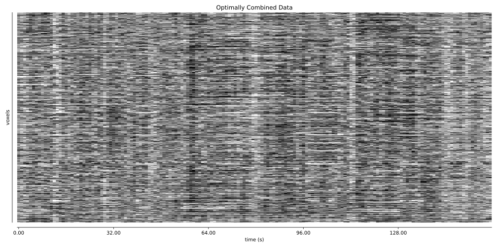
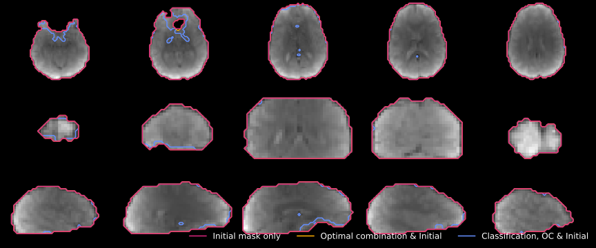
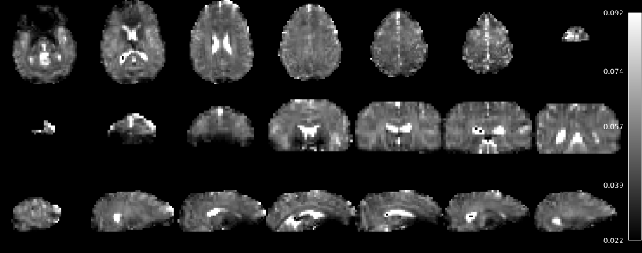
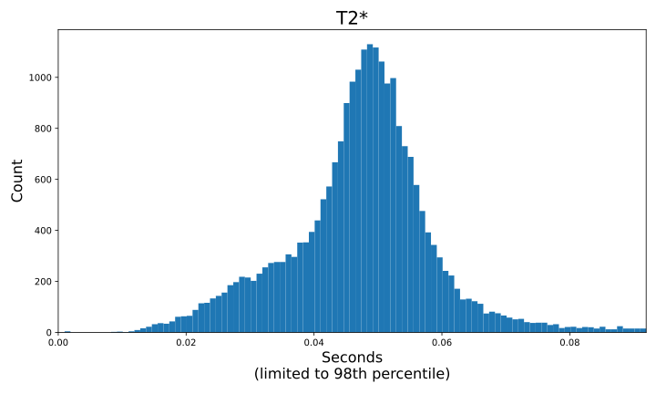
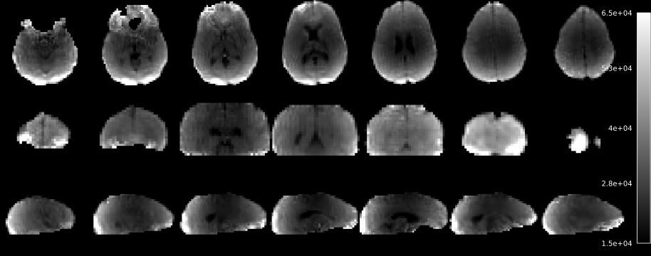
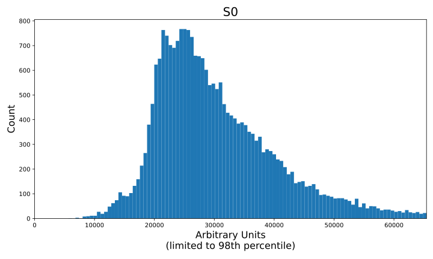
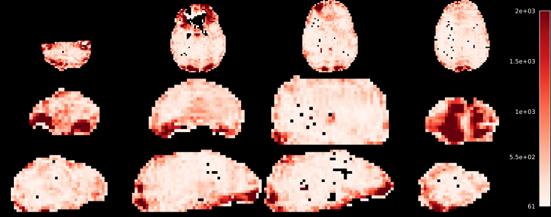
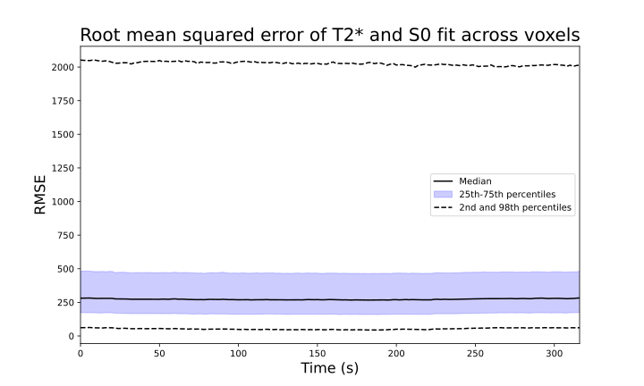
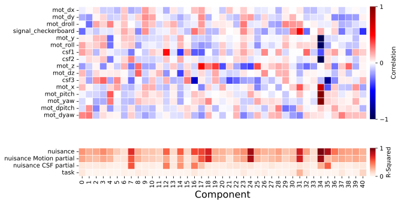

Tedana command used:
tedana_workflow(data=['five-echo-dataset/p06.SBJ01_S09_Task11_e1.sm.nii.gz', 'five-echo-dataset/p06.SBJ01_S09_Task11_e2.sm.nii.gz', 'five-echo-dataset/p06.SBJ01_S09_Task11_e3.sm.nii.gz', 'five-echo-dataset/p06.SBJ01_S09_Task11_e4.sm.nii.gz', 'five-echo-dataset/p06.SBJ01_S09_Task11_e5.sm.nii.gz'], tes=[15.4, 29.7, 44.0, 58.3, 72.6], out_dir=/Users/handwerkerd/Documents/code/meica/ohbm-2026-multiecho/five-echo-dataset/tedana_external_regress_processed, mask=None, convention=bids, prefix=, dummy_scans=0, masktype=['dropout'], fittype=loglin, combmode=t2s, n_independent_echos=None, tree=demo_external_regressors_motion_task_models, external_regressors=five-echo-dataset/external_regressors.tsv, ica_method=fastica, n_robust_runs=30, tedpca=aic, fixed_seed=42, maxit=500, maxrestart=10, tedort=False, gscontrol=None, no_reports=False, png_cmap=coolwarm, verbose=False, low_mem=False, debug=False, quiet=False, overwrite=False, t2smap=None, mixing_file=five-echo-dataset/tedana_processed/desc-ICA_mixing.tsv, n_threads=1)
| System: | Darwin |
| Node: | MH01557431MLI |
| Release: | 24.6.0 |
| System version: | Darwin Kernel Version 24.6.0: Fri Feb 27 19:34:59 PST 2026; root:xnu-11417.140.69.709.8~1/RELEASE_ARM64_T6041 |
| Machine: | arm64 |
| Processor: | arm |
| Python: | 3.12.12 | packaged by conda-forge | (main, Oct 22 2025, 23:34:53) [Clang 19.1.7 ] |
| Tedana version: | 26.0.4.dev24+gdd24fef9a |
| Other library versions: | {'bokeh': '3.8.1', 'mapca': '0.0.7', 'matplotlib': '3.10.8', 'nibabel': '5.3.2', 'nilearn': '0.13.2.dev93+gf9740f67e', 'numpy': '2.3.5', 'pandas': '3.0.0', 'robustica': '0.1.4', 'scikit-learn': '1.8.0', 'scipy': '1.16.3', 'threadpoolctl': '3.6.0', 'tqdm': '4.67.1'} |